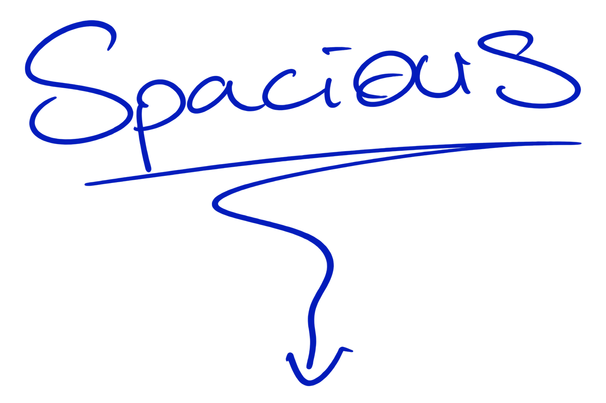

an audio home for conversations that need room
hosted by Grace
Spacious is an audio home for conversations that need room.
Some are about something a person knows. Some are hard. Some are spicy. Some may eventually be deleted. They can be brief or sprawling, named or anonymous — carefully made, but never performed for a camera.
Hosted by Grace, Spacious follows better questions wherever they lead.
curiosity and lived knowledge
things learned through difficulty
desire, taboo, secrets, uncomfortable ideas
conversations that need an extra layer of permission
an existing body of work, and occasional future-facing conversations
one feed — each episode carries the name of its room
Does this conversation go somewhere an ordinary interview wouldn't?
if yes, it belongs in Spacious.
Audio-only is part of the thesis, not a production compromise.
When nobody has to manage their face, posture, surroundings or personal brand for a camera, different things become possible. A conversation can happen on a walk, in someone's kitchen, after midnight, while travelling — wherever it belongs.
Episodes can last twelve minutes or three hours. What holds Spacious together is the condition it creates: enough room for a conversation to become something neither person had prepared.
Something you know. Something hard. Something you'd only say with an extra layer of permission. It doesn't need to be polished — and you don't need to know which room it belongs in. That can come afterwards.